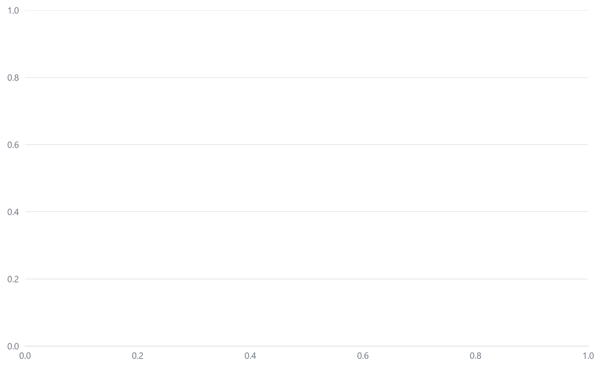
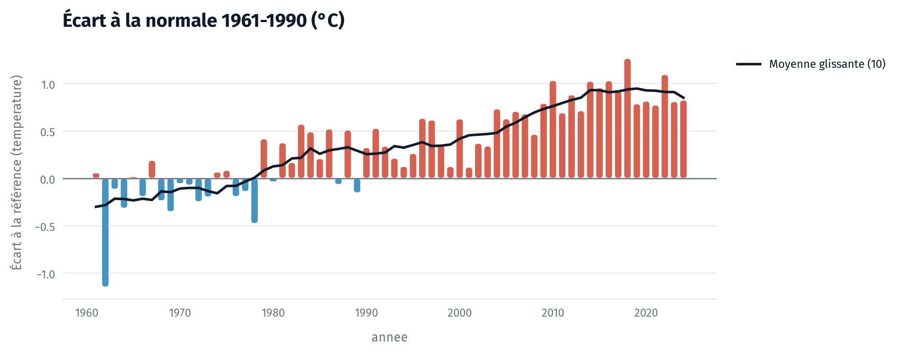
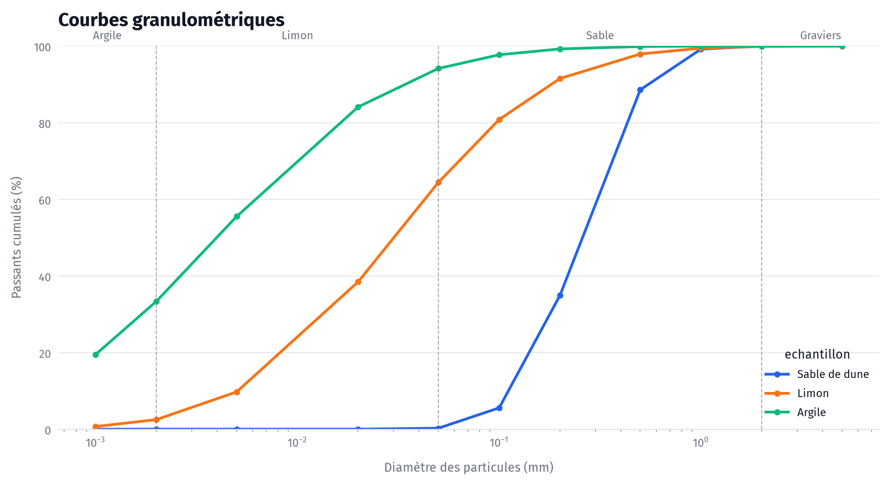
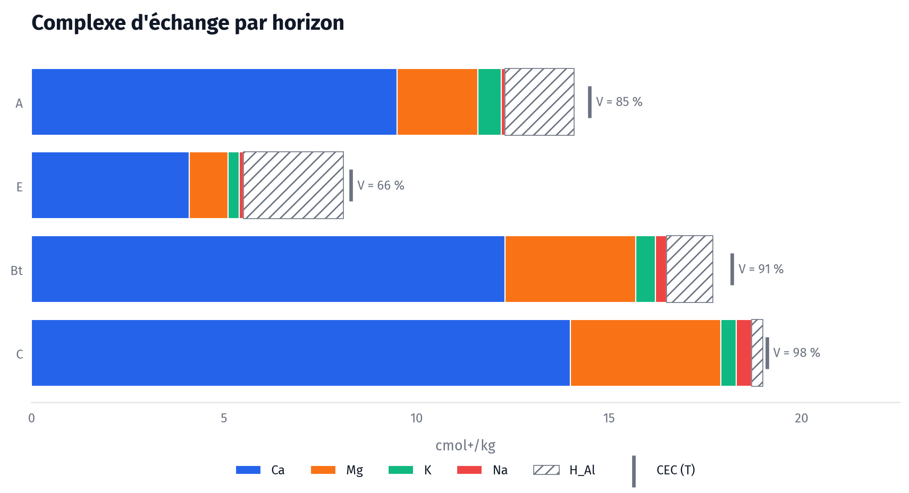

Climatogrammes, bilan hydrique, degrés-jours, vent, profils et textures de sol.
Tous les exemples utilisent le thème editorial ; chaque graphique suit le thème actif (set_theme(...)). Retour à la galerie.
ombrothermic — Diagramme ombrothermique
Diagramme ombrothermique de Bagnouls et Gaussen : températures et précipitations mensuelles sur deux axes à l’échelle P = 2T ; un mois est sec quand P < 2T. En barres (défaut) ou en deux courbes avec la saison sèche hachurée (kind='lines').
Quand l’utiliser. Caractériser le climat d’une station, délimiter la saison sèche et la saison des pluies pour raisonner un calendrier cultural.
Données attendues : un DataFrame, une ligne par mois (12 lignes), dans l’ordre du calendrier.
Colonne (exemple)
Type
Rôle
Exemple de valeur
mois
texte
month_col : nom du mois
Jan
temp
nombre
temperature_col : température moyenne (°C)
24.3
precip
nombre
precipitation_col : précipitations (mm)
3
Paramètres
Paramètre
Défaut
Description
month_col
obligatoire
Colonne avec les étiquettes de mois (axe x).
temperature_col
obligatoire
Colonne avec la température mensuelle moyenne (°C).
precipitation_col
obligatoire
Colonne avec les précipitations mensuelles totales (mm).
temp_color
None
Couleur de la courbe de température.
precip_color
None
Couleur des barres de précipitations.
dry_period_color
None
Couleur des hachures de la période sèche.
dry_period_alpha
0.9
Opacité des hachures de la période sèche.
show_threshold_line
True
Afficher la ligne de référence p = 2T.
temp_scale_factor
2.0
Rapport d’échelle précipitations/température (défaut 2.0 pour p = 2T).
kind
'bars'
‘bars’ (barres de pluie) ou ‘lines’ (deux courbes, saison sèche hachurée).
hatch
'///'
Motif des hachures de la saison sèche (kind='lines') : ‘///’, ‘xx’, ‘…’.
humid_fill
True
Colore légèrement la saison humide (kind='lines').
Résultats calculés : chart.dry_months (mode ‘lines’) : la liste des mois secs.
Exemple
Le diagramme ombrothermique de Bagnouls et Gaussen met en regard la courbe des températures et les barres de précipitations selon la convention p = 2T. Les zones où p < 2T sont des périodes sèches.
from plutovizu import Chartimport pandas as pddf = pd.DataFrame({'mois': ['Jan','Fév','Mar','Avr','Mai','Jun','Jul','Aoû','Sep','Oct','Nov','Déc'],'temp': [23.1,23.5,24.2,24.8,26.5,28.2,28.5,28.3,28.0,27.6,25.6,23.7],'precip': [3,1,0,0,0,16,88,235,155,60,5,5],})(Chart(df) .print_ombrothermic_analysis('mois', 'temp', 'precip'))
Analyse des périodes sèches et humides:
========================================
Jan: PÉRIODE SÈCHE - Précip: 3.0mm < Seuil: 46.2mm
Fév: PÉRIODE SÈCHE - Précip: 1.0mm < Seuil: 47.0mm
Mar: PÉRIODE SÈCHE - Précip: 0.0mm < Seuil: 48.4mm
Avr: PÉRIODE SÈCHE - Précip: 0.0mm < Seuil: 49.6mm
Mai: PÉRIODE SÈCHE - Précip: 0.0mm < Seuil: 53.0mm
Jun: PÉRIODE SÈCHE - Précip: 16.0mm < Seuil: 56.4mm
Jul: Période humide - Précip: 88.0mm ≥ Seuil: 57.0mm
Aoû: Période humide - Précip: 235.0mm ≥ Seuil: 56.6mm
Sep: Période humide - Précip: 155.0mm ≥ Seuil: 56.0mm
Oct: Période humide - Précip: 60.0mm ≥ Seuil: 55.2mm
Nov: PÉRIODE SÈCHE - Précip: 5.0mm < Seuil: 51.2mm
Déc: PÉRIODE SÈCHE - Précip: 5.0mm < Seuil: 47.4mm
Résumé: 8 mois secs sur 12 mois

Variante en deux courbes, périodes sèches hachurées
Avec kind='lines', les précipitations sont tracées en courbe (sur l’échelle P = 2T) et les périodes sèches — là où la courbe des pluies passe sous celle des températures — sont hachurées entre les deux courbes. Les hachures s’arrêtent exactement aux croisements. hatch change le motif ('///', 'xx', '...') ; les mois secs sont dans chart.dry_months.
chart = (Chart(station_b, figsize=(10, 5)) .ombrothermic('mois', 'temperature', 'pluie', kind='lines') .title('Diagramme ombrothermique — Station B (fictive)') .tight_layout())print('Mois secs :', chart.dry_months)chart.show()
Mois secs : ['Jan', 'Fév', 'Mar', 'Avr', 'Nov', 'Déc']
Diagramme ombrothermique en courbes, saison sèche hachurée (station fictive)
soil_texture — Triangle des textures USDA
Triangle des textures USDA : les 12 classes texturales tracées et nommées, et les échantillons placés selon leurs teneurs en sable, limon et argile.
Quand l’utiliser. Classer des échantillons de sol par texture et comparer des sites ou des horizons.
Données attendues : un DataFrame, une ligne par échantillon ; sable + limon + argile = 100.
Colonne (exemple)
Type
Rôle
Exemple de valeur
sable
nombre
sand : % de sable
45
limon
nombre
silt : % de limon
35
argile
nombre
clay : % d’argile
20
zone
texte
group (optionnel)
Bas-fond
Paramètres
Paramètre
Défaut
Description
sand
obligatoire
Colonne des teneurs en sable (%).
silt
obligatoire
Colonne des teneurs en limon (%).
clay
obligatoire
Colonne des teneurs en argile (%).
group
None
Colonne de groupe (couleurs + légende).
show_classes
True
Trace et nomme les 12 classes texturales.
fill
True
Colore légèrement chaque classe.
**kwargs
—
Options supplémentaires transmises à la fonction sous-jacente (seaborn ou matplotlib).
Résultats calculés : chart.texture_classes : la classe USDA de chaque échantillon.
Exemple
Les 12 classes de texture USDA tracées et nommées, avec les échantillons par-dessus. La classe de chaque échantillon est dans chart.texture_classes ; la fonction texture_class(sable, limon, argile) classe aussi des valeurs sans tracer.
Les stations de cette page sont fictives (climats de type sahélien, soudanien et guinéen) : les valeurs sont illustratives.
walter_lieth — Climatogramme de Walter-Lieth
Climatogramme de Walter et Lieth : 10 °C correspondent à 20 mm, échelle des pluies comprimée au-delà de 100 mm, saison humide en bleu, saison sèche pointillée, mois de gel sous l’axe.
Quand l’utiliser. Comparer des climats selon la convention internationale des écologues, avec un résumé (températures et pluie annuelles) dans l’en-tête.
Données attendues : un DataFrame, une ligne par mois (12 lignes).
Colonne (exemple)
Type
Rôle
Exemple de valeur
mois
texte
month : nom du mois
Juil
temperature
nombre
temp : température moyenne (°C)
28.1
pluie
nombre
precip : précipitations (mm)
142
tmin
nombre
tmin (optionnel) : minimum (°C), pour les mois de gel
21.4
Paramètres
Paramètre
Défaut
Description
month
obligatoire
Colonne des mois.
temp
obligatoire
Colonne des températures moyennes mensuelles (°C).
precip
obligatoire
Colonne des précipitations mensuelles (mm).
tmin
None
Colonne optionnelle des températures minimales ; tmin < 0 marque un mois de gel.
station
None
Nom de la station écrit dans l’en-tête.
temp_color
'#d1495b'
Couleur de la courbe des températures.
precip_color
'#2e86de'
Couleur de la courbe des précipitations.
Résultats calculés : chart.climate_summary : moyennes et totaux annuels.
Exemple
Le diagramme climatique de référence en écologie : 10 °C correspondent à 20 mm de pluie, l’échelle des pluies est comprimée au 1/10 au-delà de 100 mm (aplat bleu foncé). La saison humide est en bleu, la saison sèche en pointillés rouges, les mois de gel (tmin < 0) sont marqués sous l’axe. Moyenne annuelle et cumul en haut à droite ; résumé dans chart.climate_summary.
Climogramme (hythergramme) : chaque mois est un point (précipitations, température), reliés en boucle fermée ; une boucle par station.
Quand l’utiliser. Comparer d’un coup d’œil le régime climatique de plusieurs stations (forme et position des boucles).
Données attendues : un DataFrame, une ligne par mois et par station.
Colonne (exemple)
Type
Rôle
Exemple de valeur
station
texte
group (optionnel) : une boucle par station
Station A
mois
texte
month (optionnel) : étiquette des points
Août
pluie
nombre
precip : précipitations (mm)
235
temperature
nombre
temp : température (°C)
28.3
Paramètres
Paramètre
Défaut
Description
precip
obligatoire
Colonne des précipitations (axe horizontal).
temp
obligatoire
Colonne des températures (axe vertical).
month
None
Colonne des mois, écrits à côté des points.
group
None
Colonne de regroupement : une couleur (et une entrée de légende) par groupe.
labels
True
Colonne des étiquettes (noms affichés).
Exemple
Température et précipitations de chaque mois en un point, reliés en boucle : la forme de la boucle résume le climat, et plusieurs stations se comparent d’un coup d’œil.
Climagramme d’Emberger : chaque station placée selon son quotient pluviothermique Q2 et m (minimum moyen du mois le plus froid), sur un fond qui donne l’étage bioclimatique et la variante thermique de l’hiver.
Quand l’utiliser. Classer le bioclimat de stations méditerranéennes ou arides (« semi-aride à hiver frais »…), comparer des sites, raisonner le choix d’espèces forestières ou cultivées selon l’aridité et la rigueur de l’hiver.
Données attendues : un DataFrame, une ligne par station (P annuel, M, m) — ou une ligne par mois et par station avec monthly=True.
Colonne (exemple)
Type
Rôle
Exemple de valeur
station
texte
station (optionnel) : nom du point
Haut plateau
pluie
nombre
precip : précipitations annuelles (mm)
290
M
nombre
tmax : moyenne des maxima du mois le plus chaud (°C)
34.5
m
nombre
tmin : moyenne des minima du mois le plus froid (°C)
-0.5
Paramètres
Paramètre
Défaut
Description
precip
obligatoire
Colonne des précipitations (mm) : annuelles, ou mensuelles avec monthly=True.
tmax
obligatoire
Colonne M (°C) : moyenne des maxima du mois le plus chaud, ou maxima mensuels.
tmin
obligatoire
Colonne m (°C) : moyenne des minima du mois le plus froid, ou minima mensuels.
station
None
Colonne du nom des stations (une ligne, ou 12 avec monthly=True).
monthly
False
Données mensuelles : P, M et m sont calculés par station.
formula
'emberger'
‘emberger’ (2000·P / (M² − m²), en kelvin) ou ‘stewart’ (3,43·P / (M − m)).
limits
None
5 limites entre étages : nombres (Q2 constant) ou couples (a, b) pour Q2 = a + b·m.
labels
True
Écrit le nom des stations à côté des points.
log
False
Axe de Q2 en échelle logarithmique.
Résultats calculés : chart.emberger_table : P, M, m, Q2, étage, variante et bioclimat de chaque station.
Exemple
Chaque station est placée selon son quotient pluviothermique Q2 et m, la moyenne des minima du mois le plus froid. Q2 = 2000·P / (M² − m²), avec M et m en kelvin (Emberger) ; formula='stewart' utilise la forme simplifiée Q2 = 3,43·P / (M − m). Les bandes donnent l’étage bioclimatique (saharien, aride, semi-aride, subhumide, humide, perhumide), les verticales la variante thermique de l’hiver (m = −3, 0, 3, 7, 10 °C).
Climagramme d’Emberger de six stations (données fictives)
station
P
M
m
Q2
etage
variante
bioclimat
0
Littoral
650.0
30.5
8.0
98.8
Subhumide
hiver chaud
Subhumide à hiver chaud
1
Plaine
420.0
33.8
4.5
49.0
Semi-aride
hiver tempéré
Semi-aride à hiver tempéré
2
Montagne
980.0
28.0
-1.5
116.0
Humide
hiver froid
Humide à hiver froid
3
Haut plateau
290.0
34.5
-0.5
28.6
Aride
hiver froid
Aride à hiver froid
4
Piémont
140.0
38.5
3.2
13.5
Aride
hiver tempéré
Aride à hiver tempéré
5
Oasis
45.0
41.0
5.5
4.3
Saharien
hiver tempéré
Saharien à hiver tempéré
Note
Les limites entre étages varient selon les auteurs. Par défaut, plutovizu utilise l’échelle de Q2 la plus citée (10, 45, 70, 110, 150) ; sur le climagramme de Sauvage (1963), les limites sont obliques. limits accepte pour chaque limite un nombre ou un couple (a, b) qui donne la droite Q2 = a + b·m.
Formule de Stewart, limites obliques (illustratives) et échelle logarithmique
Avec des données mensuelles (une ligne par mois et par station), monthly=True calcule P (somme), M (plus fort maximum mensuel) et m (plus faible minimum mensuel).
ecoclimatogram — Écoclimatogramme
Écoclimatogramme de Bodenheimer : température moyenne mensuelle selon l’humidité relative, en boucle annuelle, comparée à la zone optimale et à la zone de tolérance d’une espèce.
Quand l’utiliser. Évaluer les mois favorables au développement d’un ravageur, d’un vecteur ou d’une culture, comparer des stations ou des années, raisonner la surveillance et les dates d’intervention.
Données attendues : un DataFrame, une ligne par mois (et par station ou année).
Colonne (exemple)
Type
Rôle
Exemple de valeur
station
texte
group (optionnel) : une boucle par station
Littoral
mois
texte
month (optionnel) : étiquette des points
Août
humidite
nombre
humidity : humidité relative moyenne (%)
84
temperature
nombre
temp : température moyenne (°C)
27.8
Paramètres
Paramètre
Défaut
Description
humidity
obligatoire
Colonne de l’humidité relative moyenne mensuelle (%).
temp
obligatoire
Colonne de la température moyenne mensuelle (°C).
month
None
Colonne des mois, écrits à côté des points.
group
None
Colonne des stations (ou années) : une boucle par groupe.
optimum
None
Zone optimale (hum_min, hum_max, t_min, t_max).
tolerance
None
Zone de tolérance, plus large (même format) : mois « favorables ».
labels
True
Écrit les mois à côté des points (avec month).
zone_color
'#2e9e5b'
Couleur des zones optimale et de tolérance (distincte des courbes).
Résultats calculés : chart.ecoclimate : zone de chaque mois (‘optimale’, ‘favorable’, ‘défavorable’).
Exemple
L’écoclimatogramme de Bodenheimer place chaque mois selon son humidité relative et sa température moyennes ; les points forment une boucle annuelle. On le compare à la zone optimale d’une espèce — ravageur, criquet, mouche des fruits, culture — et à sa zone de tolérance, plus large : les mois qui y tombent sont ceux où l’espèce peut se développer.
Précipitations face à l’évapotranspiration potentielle (ETP) : excédent en bleu, déficit en orange. Bilan mensuel dans chart.water_table, totaux dans chart.water_summary.
Degrés-jours de croissance cumulés, DJ = max(0, (Tmax + Tmin) / 2 − base), avec la date d’atteinte de chaque stade.
Quand l’utiliser. Prévoir les stades de développement d’une culture (floraison, maturité) ou d’un ravageur à partir des températures journalières.
Données attendues : un DataFrame, une ligne par jour.
Colonne (exemple)
Type
Rôle
Exemple de valeur
jour
date
date
2024-07-15
tmin
nombre
tmin : minimum du jour (°C)
23.8
tmax
nombre
tmax : maximum du jour (°C)
33.1
Paramètres
Paramètre
Défaut
Description
date
obligatoire
Colonne des dates (une ligne par jour).
tmin
obligatoire
Colonne des températures minimales journalières (°C).
tmax
obligatoire
Colonne des températures maximales journalières (°C).
base
10.0
Température de base sous laquelle la plante ne se développe pas (°C).
cap
None
Plafond appliqué à Tmax (°C) ; None = pas de plafond.
stages
None
Dictionnaire {stade: DJ requis}, ex. {‘Floraison’: 1250}.
color
None
Couleur unique (nom, hexadécimal). None : couleur du thème.
Résultats calculés : chart.gdd (série journalière), chart.stage_dates (date de chaque stade).
Exemple
Somme des températures utiles à la culture : chaque jour apporte max(0, (Tmax + Tmin) / 2 − base), Tmax pouvant être plafonnée (cap). stages marque la date d’atteinte de chaque stade.
Degrés-jours cumulés et stades d’un riz (seuils illustratifs)
wind_rose — Rose des vents
Rose des vents à partir des observations brutes : directions regroupées en secteurs, vitesses en classes, en % des observations.
Quand l’utiliser. Connaître les vents dominants d’un site : implantation de brise-vent, d’éoliennes, orientation de bâtiments, dispersion de traitements.
Données attendues : un DataFrame, une ligne par observation (direction et vitesse).
Colonne (exemple)
Type
Rôle
Exemple de valeur
direction
nombre
direction : degrés (0 = nord, 90 = est)
315
vitesse
nombre
speed : vitesse
4.2
Paramètres
Paramètre
Défaut
Description
direction
obligatoire
Colonne des directions d’où vient le vent, en degrés (0 = nord).
speed
obligatoire
Colonne des vitesses.
sectors
16
Nombre de secteurs de direction (8, 16…).
speed_bins
None
Bornes des classes de vitesse ; None = automatique.
unit
'm/s'
Unité des vitesses affichée dans la légende.
cmap
None
Palette de couleurs continue (nom matplotlib). None : celle du thème.
Résultats calculés : chart.wind_table : fréquences par secteur et classe de vitesse.
Exemple
Directement à partir des observations : directions en degrés (0 = nord) regroupées en secteurs, vitesses en classes, fréquences en % des observations.
Barres d’anomalies : l’écart de chaque valeur à une référence (moyenne, nombre ou période de référence), avec une moyenne glissante en option.
Quand l’utiliser. Mettre en évidence les années chaudes ou sèches, une tendance climatique, un écart à une normale.
Données attendues : un DataFrame, une ligne par période (année).
Colonne (exemple)
Type
Rôle
Exemple de valeur
annee
nombre
x : période
1998
temperature
nombre
value : valeur comparée à la référence
27.9
Paramètres
Paramètre
Défaut
Description
x
obligatoire
Colonne de l’axe horizontal.
value
obligatoire
Colonne des valeurs.
baseline
None
Référence : None (moyenne), un nombre, ou une période (début, fin) de x, ex. (1961, 1990).
window
None
Largeur de la moyenne glissante ; None = pas de moyenne glissante.
pos_color
'#d6604d'
Couleur des anomalies positives.
neg_color
'#4393c3'
Couleur des anomalies négatives.
Résultats calculés : chart.anomalies : les écarts.
Exemple
L’écart de chaque année à une référence : la moyenne, un nombre, ou la moyenne d’une période (baseline=(1961, 1990)), avec une moyenne glissante en option.
(Chart(annees, figsize=(10, 4)) .anomaly('annee', 'temperature', baseline=(1961, 1990), window=10) .title('Écart à la normale 1961-1990 (°C)') .tight_layout() .show())

Anomalies de température par rapport à 1961-1990
climate_stripes — Bandes climatiques
Bandes climatiques (« warming stripes ») : une bande verticale par année, colorée selon l’écart à la moyenne, du bleu (froid) au rouge (chaud).
Quand l’utiliser. Communiquer une tendance de long terme de façon immédiate, sans chiffres.
Données attendues : un DataFrame, une ligne par année.
Colonne (exemple)
Type
Rôle
Exemple de valeur
annee
nombre
x
2010
temperature
nombre
value
28.4
Paramètres
Paramètre
Défaut
Description
x
obligatoire
Colonne de l’axe horizontal.
value
obligatoire
Colonne des valeurs (ex. température moyenne annuelle).
cmap
'RdBu_r'
Palette de couleurs continue (nom matplotlib). None : celle du thème.
show_years
True
Affiche quelques années sous les bandes.
Exemple
Une bande par année, du bleu (plus froid que la moyenne) au rouge (plus chaud), dans l’esprit des warming stripes d’Ed Hawkins.
Profil de sol : les horizons empilés selon la profondeur (vers le bas), une colonne par fosse, colorés par horizon ou par leur couleur réelle.
Quand l’utiliser. Décrire et comparer des fosses pédologiques (toposéquence, parcelles), illustrer un rapport de description des sols.
Données attendues : un DataFrame, une ligne par horizon.
Colonne (exemple)
Type
Rôle
Exemple de valeur
fosse
texte
profile (optionnel) : une colonne par fosse
Plateau
horizon
texte
horizon : nom de l’horizon
Bt
haut
nombre
top : profondeur du haut (cm)
18
bas
nombre
bottom : profondeur du bas (cm)
70
couleur
texte (couleur)
color (optionnel) : couleur réelle (hex)
#a0522d
Paramètres
Paramètre
Défaut
Description
top
obligatoire
Colonne de la profondeur du haut de l’horizon (cm).
bottom
obligatoire
Colonne de la profondeur du bas de l’horizon (cm).
horizon
obligatoire
Colonne du nom de l’horizon (écrit dans le rectangle).
profile
None
Colonne du nom de la fosse ; une colonne par fosse.
color
None
Colonne de couleurs (hexadécimal, ex. Munsell converti) ; None = couleurs du thème.
width
0.6
Largeur de chaque colonne de profil.
show_labels
True
Écrit le nom des horizons.
Exemple
Les horizons empilés selon la profondeur, une colonne par fosse. color accepte une colonne de couleurs, par exemple des notations Munsell converties en hexadécimal.
Profil multi-variables : plusieurs propriétés côte à côte, un panneau par propriété, sur une échelle de profondeur commune ; en paliers par horizon avec bottom.
Quand l’utiliser. Synthèse analytique d’une ou plusieurs fosses (pH, matière organique, argile, CEC) pour lire les discontinuités entre horizons.
Données attendues : un DataFrame, une ligne par horizon (ou par profondeur mesurée) et par fosse.
Colonne (exemple)
Type
Rôle
Exemple de valeur
fosse
texte
group (optionnel) : une courbe par fosse
Fosse 1
haut
nombre
depth : haut de l’horizon (cm), ou profondeur du point
20
bas
nombre
bottom (optionnel) : bas de l’horizon (cm)
45
pH
nombre
columns : un panneau par propriété
5.8
MO (%)
nombre
columns : autre propriété
1.2
Paramètres
Paramètre
Défaut
Description
depth
obligatoire
Colonne de la profondeur (haut de l’horizon si bottom est donné).
columns
obligatoire
Liste des propriétés ; un panneau par colonne.
bottom
None
Colonne du bas de l’horizon ; valeurs tracées en paliers d’épaisseur de l’horizon.
group
None
Colonne de regroupement : une couleur (et une entrée de légende) par groupe.
marker
'o'
Symbole des points (o, s, ^, None…).
Exemple
Plusieurs propriétés côte à côte sur la même échelle de profondeur. Avec bottom, les valeurs sont tracées en paliers sur l’épaisseur de chaque horizon.
(Chart(proprietes, figsize=(10, 5.5)) .soil_properties('haut', ['pH', 'MO (%)', 'Argile (%)', 'CEC (cmol+/kg)'], bottom='bas', group='fosse') .title('Propriétés des sols par horizon') .show())

Propriétés de deux fosses par horizon (données fictives)
retention_curve — Courbe de rétention d’eau (pF)
Courbe de rétention d’eau (courbe pF) : teneur en eau selon la succion, capacité au champ (pF 2,5), point de flétrissement (pF 4,2) et réserve utile, ajustement de van Genuchten.
Quand l’utiliser. Caractériser les propriétés hydriques d’un sol ou d’un horizon, calculer la réserve utile pour le pilotage de l’irrigation.
Données attendues : un DataFrame, une ligne par mesure (succion, teneur en eau) et par échantillon.
Colonne (exemple)
Type
Rôle
Exemple de valeur
horizon
texte
group (optionnel) : une courbe par échantillon
Bt (argileux)
pF
nombre
suction : succion (pF, kPa ou cm selon unit)
2.5
theta
nombre
water : teneur en eau (m³/m³ ou %)
0.238
Paramètres
Paramètre
Défaut
Description
suction
obligatoire
Colonne de la succion.
water
obligatoire
Colonne de la teneur en eau.
group
None
Colonne de regroupement : une couleur (et une entrée de légende) par groupe.
unit
'pF'
Unité de la succion : ‘pF’ (log10 de cm d’eau), ‘kPa’ ou ‘cm’.
fit
True
Ajuste le modèle de van Genuchten (au moins 4 points) ; sinon interpolation linéaire.
field_capacity
2.5
pF de la capacité au champ (2.5 ; 2.0 est aussi utilisé).
wilting_point
4.2
pF du point de flétrissement permanent (4.2).
Résultats calculés : chart.retention : θr, θs, α, n, capacité au champ, point de flétrissement, réserve utile.
Exemple
Teneur en eau selon la succion (pF = log₁₀ de la succion en cm d’eau). Les lignes marquent la capacité au champ (pF 2,5) et le point de flétrissement (pF 4,2) ; la réserve utile est l’eau retenue entre les deux. Le modèle de van Genuchten est ajusté sur les points (fit=False : simple interpolation). unit='kPa' ou 'cm' si la succion n’est pas en pF.
chart = (Chart(retention, figsize=(9, 5.5)) .retention_curve('pF', 'theta', group='horizon') .labels('Teneur en eau volumique θ (m³/m³)') .title('Courbes de rétention') .tight_layout())chart.show()chart.retention.round(3)

Courbes pF de deux horizons (données fictives)
groupe
theta_r
theta_s
alpha
n
capacite_champ
point_fletrissement
reserve_utile
0
A (limoneux)
0.074
0.451
0.021
1.440
0.236
0.104
0.132
1
Bt (argileux)
0.157
0.504
0.009
1.262
0.411
0.252
0.158
Avec un seul échantillon, la réserve utile est surlignée :
(Chart(retention[retention['horizon'] =='A (limoneux)'], figsize=(9, 5.5)) .retention_curve('pF', 'theta') .labels('Teneur en eau volumique θ (m³/m³)') .title('Réserve utile de l\'horizon A') .tight_layout() .show())
Courbe granulométrique cumulative : pourcentage de particules plus fines qu’un diamètre (échelle log), avec les limites argile / limon / sable / graviers.
Quand l’utiliser. Analyse granulométrique d’un sol ou d’un matériau : comparer des échantillons, calculer D10, D60 et le coefficient d’uniformité (géotechnique, drainage, filtres).
Données attendues : un DataFrame, une ligne par tamis (diamètre, % passant) et par échantillon.
Colonne (exemple)
Type
Rôle
Exemple de valeur
echantillon
texte
group (optionnel) : une courbe par échantillon
Limon
diametre_mm
nombre
diameter : diamètre (mm)
0.05
passant
nombre
passing : % de passants cumulés
64
Paramètres
Paramètre
Défaut
Description
diameter
obligatoire
Colonne des diamètres (mm).
passing
obligatoire
Colonne des pourcentages cumulés de particules plus fines.
group
None
Colonne de regroupement : une couleur (et une entrée de légende) par groupe.
limits
(0.002, 0.05, 2.0)
Diamètres (mm) séparant les classes ; défaut 2 µm, 50 µm, 2 mm.
names
('Argile', 'Limon', 'Sable', 'Graviers')
Noms des classes, un de plus que de limites.
Résultats calculés : chart.grain_size : D10, D30, D60, Cu, Cc.
Exemple
Pourcentage de particules plus fines qu’un diamètre (échelle log), avec les limites argile (2 µm), limon (50 µm), sable (2 mm). chart.grain_size donne D10, D30, D60, le coefficient d’uniformité Cu = D60/D10 et de courbure Cc = D30²/(D10·D60) ; NaN quand le diamètre est hors des mesures. limits et names changent la classification.
Granulométrie de trois matériaux (données fictives)
groupe
D10
D30
D60
Cu
Cc
0
Sable de dune
0.1110
0.1781
0.3070
2.7647
0.9305
1
Limon
0.0051
0.0133
0.0428
8.4457
0.8161
2
Argile
NaN
0.0017
0.0062
NaN
NaN
exchange_complex — Complexe d’échange et saturation
Complexe d’échange par horizon : cations échangeables empilés (cmol+/kg), acidité hachurée, CEC marquée d’un trait et taux de saturation V = S/T.
Quand l’utiliser. Diagnostiquer la fertilité chimique d’un profil : réserve en bases, désaturation, besoin de chaulage.
Données attendues : un DataFrame, une ligne par horizon, de la surface vers la profondeur.
Colonne (exemple)
Type
Rôle
Exemple de valeur
horizon
texte
horizon : nom de la barre
A
Ca
nombre
cations : calcium échangeable (cmol+/kg)
9.5
Mg
nombre
cations : magnésium échangeable
2.1
H_Al
nombre
acidity (optionnel) : acidité échangeable
1.8
CEC
nombre
cec (optionnel) : capacité d’échange
14.5
Paramètres
Paramètre
Défaut
Description
horizon
obligatoire
Colonne des noms d’horizons (une barre par ligne, surface en haut).
cations
obligatoire
Liste des colonnes de cations basiques (Ca, Mg, K, Na…) en cmol+/kg.
acidity
None
Colonne de l’acidité échangeable (H + Al), hachurée.
cec
None
Colonne de la CEC (T) ; sans elle, T = somme des bases + acidité.
show_saturation
True
Écrit le taux de saturation V au bout des barres.
Résultats calculés : chart.base_saturation : V (%) par horizon.
Exemple
Cations échangeables empilés par horizon (cmol+/kg), acidité échangeable hachurée, CEC marquée d’un trait. Le taux de saturation V = S/T (S = somme des bases, T = CEC, ou S + acidité sans cec) est écrit au bout des barres et stocké dans chart.base_saturation.
Complexe d’échange d’un sol lessivé (données fictives)
A 84.8
E 66.3
Bt 90.7
C 97.9
Name: V (%), dtype: float64
infiltration_curve — Courbe d’infiltration
Courbe d’infiltration : infiltration cumulée d’un essai au cours du temps avec un modèle ajusté (Philip ou Horton) et la vitesse d’infiltration sur l’axe de droite.
Quand l’utiliser. Exploiter un essai au double anneau ou Beerkan : vitesse d’infiltration finale (perméabilité), comparaison de pratiques culturales, risque de ruissellement.
Données attendues : un DataFrame, une ligne par lecture (temps, cumul).
Colonne (exemple)
Type
Rôle
Exemple de valeur
minutes
nombre
time : temps écoulé
15
infiltration_mm
nombre
cumulative : lame infiltrée cumulée
29.2
Paramètres
Paramètre
Défaut
Description
time
obligatoire
Colonne du temps écoulé depuis le début de l’essai.
cumulative
obligatoire
Colonne de l’infiltration cumulée.
model
'philip'
‘philip’ (I = S·√t + A·t) ou ‘horton’ (vitesse décroissant exponentiellement vers fc).
show_rate
True
Ajoute la vitesse d’infiltration mesurée et modélisée sur un axe de droite.
Résultats calculés : chart.infiltration : paramètres du modèle et vitesse finale.
Exemple
Infiltration cumulée d’un essai (double anneau, Beerkan…) avec un modèle ajusté : Philip I = S·√t + A·t (défaut) ou Horton I = fc·t + (f0 − fc)(1 − e^(−kt))/k. La vitesse d’infiltration, mesurée et modélisée, est sur l’axe de droite ; la ligne pointillée est la vitesse finale (A ou fc). Paramètres dans chart.infiltration.
chart = (Chart(infiltration, figsize=(10, 5.5)) .infiltration_curve('minutes', 'infiltration_mm', model='philip') .title('Infiltration — modèle de Philip') .tight_layout())chart.show()print({k: round(v, 3) ifisinstance(v, float) else v for k, v in chart.infiltration.items()})
Diagramme des isoplèthes : une variable du sol dans le plan temps × profondeur, en courbes de niveau remplies, profondeur vers le bas.
Quand l’utiliser. Suivre l’humectation et le dessèchement d’un profil au fil des saisons, la propagation de la chaleur, d’un front de salinité.
Données attendues : un DataFrame, une ligne par date et par profondeur (format long).
Colonne (exemple)
Type
Rôle
Exemple de valeur
date
date ou nombre
time : date de mesure
2025-03-01
profondeur
nombre
depth : profondeur (cm)
40
humidite
nombre
value : variable mesurée
27.3
Paramètres
Paramètre
Défaut
Description
time
obligatoire
Colonne des dates (ou instants numériques).
depth
obligatoire
Colonne des profondeurs (axe vertical, vers le bas).
value
obligatoire
Colonne de la variable cartographiée.
levels
10
Nombre de niveaux (ou liste des seuils) des courbes de niveau.
cmap
None
Palette de couleurs continue (nom matplotlib). None : celle du thème.
contour_labels
True
Ajoute des isolignes annotées.
Exemple
Une variable du sol dans le plan profondeur × temps : on suit l’humectation et le dessèchement du profil au fil des saisons. Données en format long (une ligne par date et profondeur).